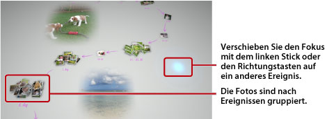

Anzeigen von Fotos
Wenn Sie Photo Gallery starten, werden alle Fotos im Systemspeicher des PS3™-Systems automatisch analysiert und je nach Ereignissen gruppiert angezeigt. Die Fotos werden nach Datum und Uhrzeit der Aufnahme zu Ereignissen gruppiert.
Auswählen von Ereignissen
Mit dem linken Stick oder den Richtungstasten können Sie von Foto zu Foto bzw. von Ereignis zu Ereignis wechseln. Wenn Sie beim Auswählen jedes Mal die  -Taste drücken, können Sie mehrere Fotos oder Ereignisse auswählen.
-Taste drücken, können Sie mehrere Fotos oder Ereignisse auswählen.

Ändern der Fotoanzeige
Wenn Sie die Art und Weise ändern möchten, wie die Fotos angezeigt werden, drücken Sie die  -Taste. Die Anzeige wechselt, wie auf den folgenden Bildern gezeigt. Wollen Sie zurück zur vorhergehenden Anzeige wechseln, drücken Sie die
-Taste. Die Anzeige wechselt, wie auf den folgenden Bildern gezeigt. Wollen Sie zurück zur vorhergehenden Anzeige wechseln, drücken Sie die  -Taste.
-Taste.
Anmerkung
Wird ein Foto im Vollbildmodus angezeigt, können Sie mit der  -Taste auf die Kontrollmenüs in der Kategorie
-Taste auf die Kontrollmenüs in der Kategorie  (Foto) auf dem XMB™-Bildschirm zugreifen. Danach können Sie mit den verfügbaren Kontrollmenüoptionen festlegen, wie die Fotos angezeigt werden sollen.
(Foto) auf dem XMB™-Bildschirm zugreifen. Danach können Sie mit den verfügbaren Kontrollmenüoptionen festlegen, wie die Fotos angezeigt werden sollen.
Anzeigen von Fotos als Slideshow
Wenn Sie Fotos als Slideshow wiedergeben lassen wollen, wählen Sie aus dem [Bibliothekbereich] eine Wiedergabeliste oder ein Ereignis aus, drücken Sie die -Taste und wählen Sie dann  (Slideshow). Wählen Sie auf dem Bildschirm, der daraufhin angezeigt wird, die unten erläuterten Optionen aus und wählen Sie dann [Starten].
(Slideshow). Wählen Sie auf dem Bildschirm, der daraufhin angezeigt wird, die unten erläuterten Optionen aus und wählen Sie dann [Starten].
| Slideshow-Stil | Dient zum Festlegen der Art und Weise, wie die Fotos in der Slideshow angezeigt werden sollen. |
|---|---|
| Slideshow-Tempo | Dient zum Festlegen der Geschwindigkeit, in der die Slideshow ablaufen soll. |
| Sortieren | Dient zum Festlegen der Reihenfolge der Fotos. |
| Slideshow-Musik | Dient zum Auswählen der Musik, die bei der Slideshow als Hintergrundmusik wiedergegeben werden soll. Zur Auswahl stehen Musikstücke, die in der Anwendung Photo Gallery enthalten sind. |
 |
Dient zum Auswählen der Musik, die bei der Slideshow als Hintergrundmusik wiedergegeben werden soll. Treffen Sie Ihre Auswahl in der Kategorie  (Musik) auf dem XMB™-Bildschirm. (Musik) auf dem XMB™-Bildschirm. |
Anmerkungen
- Während einer Slideshow können Sie mit der -Taste auf die Kontrollmenüs für die Kategorie (Foto) zugreifen. Danach können Sie mit den verfügbaren Kontrollmenüoptionen festlegen, wie die Slideshow angezeigt werden soll.
- Wenn Fotos im [Bibliothekbereich] angezeigt werden, können Sie die Fotos mit der Option [Ähnlichkeit] unter [Sortieren] auf der Grundlage von Ähnlichkeiten zwischen den Fotos sortieren.
Wechseln der Hintergrundmusik
Beim Anzeigen von Fotos kann eine Hintergrundmusik wiedergegeben werden, die Sie auswählen können. Rufen Sie mit der PS-Taste am Wireless-Controller den XMB™-Bildschirm auf, wählen Sie (Musik) und wählen Sie dann die Musikdatei aus, die wiedergegeben werden soll.
Anmerkungen
- Wenn Sie die Hintergrundmusik für Slideshows wechseln wollen, wählen Sie erst die gewünschte Musik aus und starten Sie dann die Slideshow.
- Wenn Sie Photo Gallery verwenden, als Hintergrundmusik einen auf einem Speichermedium aufgezeichneten Musiktitel auswählen und dann eine Slideshow starten, wird der Titel nach dem Ende der Slideshow möglicherweise nicht mehr erneut wiedergegeben.